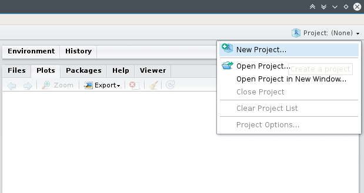

Capítulo 1 Empezando con R y RStudio
1.1 ¿Qué es R y RStudio?
R es un lenguaje y entorno para el procesamiento, visualización y análisis estadístico de datos. Ha sido creado en 1993 por R. Gentleman y R. Ihaka, ambos científicos del Departamento de Estadística de la Universidad de Auckland (Nueva Zelanda). Actualmente su desarrollo y mantenimiento está a cargo del R Core Team. El sitio oficial del proyecto es www.r-project.org

Figure 1.1: Página oficial de R Project
Hoy en día, R es la lingua franca del procesamiento y análisis de datos, tanto en el ámbito académico como comercial dado que es gratiuto, multiplataforma, de código abierto (open source, liberado con licencia GNU/GPL). Esto y el ecosistema de paquetes contribuidos por la comunidad de usuarios lo convierte en un software muy potente ya que expresa el estado del arte de los métodos estadísticos.
Al igual que su antecesor S, la flexibilidad y potencia de R se basa en su interfaz de comandos (CLI, del inglés command line interface ) que permite la ejecución de comandos de manera interactiva (en consola) o estructurada mediante scritps.

Figure 1.2: Consola o terminal de Windows, Mac OS X y Linux corriendo la última versión estable de R

Figure 1.2: Consola o terminal de Windows, Mac OS X y Linux corriendo la última versión estable de R
Existen algunos desarrollos de interfases gráficas (GUIs, del inglés graphical user interface), e.g. RCommander, Deducer, etc., que ofrecen la posibilidad de, mediante menues y botones dedicados, ejecutar algunos análisis relativamente simples minimizando la necesidad de escribir código.
Figure 1.3: Interfase de R Commander
Los entornos de desarrollo integrados (IDE por sus siglas en inglés integrated development environments) ofrecen un enfoque intermedio ya que los menúes o funciones asistentes facilitan algunas tareas generales (abrir archivos, carga de datos, exportar gráficos y resultados, etc.) pero dejan la codificación y ejecución del análisis estadístico en manos del usuario. Entre estas alternativas se destaca RStudio ( www.rstudio.com ) el cual también es de código abierto (licencia GNU/GPL), multiplataforma y ofrece una versión gratuita.

Figure 1.4: Interfase de RStudio
1.2 ¿Cómo instalar R y RStudio?
R y RStudio se instalan por separado. R puede funcionar sin RStudio, en cambio éste necesita que al menos una versión de R esté instalada en el sistema. Ambos softwares son multiplataforma y pueden ser ejecutados en sistemas operativos Windows, OS X y Linux. En la página https://cloud.r-project.org/ hay instrucciones específicas para cada plataforma. A continuación se describe el procedimiento para instalar R y RStudio bajo Windows.
1.2.1 Instalación de R
- Descargar el archivo instalador correspondiente a la última versión estable de R desde el CRAN1 (del inglés, Comprenhensive R Archive Network) visitando el siguiente link.

Figure 1.5: Página de descaga de R
- Ejecutar el archivo descargado2 y seguir el asistente de instalación con todas las opciones por defecto.
- Si la instalación ha sido exitosa en el menú Inicio podrá encontrarse la carpeta R que contendrá dos accesos directos a la interfase de usuario mínima que viene con la versión de R para Windows.
Figure 1.6: R GUI para Windows
1.2.2 Instalación de RStudio
- Ir al sitio web de descarga de RStudio https://www.rstudio.com/products/rstudio/download/
Figure 1.7: Página principal de RStudio
- Descargar el archivo de instalación correspondiente a nuestra plataforma o sistema operativo.

Figure 1.8: Página principal de RStudio
- Ejecutar el archivo
.exe3 y seguir el asistente de instalación con todas las opciones por defecto.
- Si la instalación ha sido exitosa en el menú Inicio dentro de la carpeta RStudio se encontrará el acceso directo a RStudio el cual, mediante el menu contextual (botón derecho del ratón) puede enviarse al Escritorio como acceso directo o bien anclar al menu de Inicio o barra de acceso rápido.
Ahora sí, ya tenemos listo R y RStudio para empezar a trabajar!!
1.3 Primera sesión
El entorno de trabajo de RStudio se divide en cuatro paneles. El contenido y disposición de los paneles puede personalizarse mediante el menu View > Panes. A continuación la descripción de los paneles por defecto.
Figure 1.9: Interfase principal de RStudio
- Editor. Es donde se editan los scripts que son archivos con los comandos para ejecutar en R. Por defecto este panel no aparece a menos que se cree un nuevo script o se abra uno previamente guardado. Es básicamente un editor de texto plano como el block de notas, aunque tiene algunas funcionalidades importantes:
- Resaltado sintaxis: mediante colores resalta las funciones, variables, comandos o palabras claves del lenguaje R
- Sangrado automático: agrega espacios en blanco para mantener la sangría de los bloques de código.
- Completado automático: muestra sugerencias para completar el comando o argumentos usando la tecla
TAB.
Console (consola). Es donde reside R propiamente dicho. Allí se ejecutan los comandos y se obtienen las salidas de R. El símbolo es
>indica que R está disponible para recibir un comando que puede ser tipeado directamente, o bien enviado desde el editor (1) de scripts usando la combinaciónCTRL + ENTERoCTRL + R.Environmnet/History/Connections. En la primera pestaña se visualizan los objetos (variables, funciones o datos cargados) que están disponibles en el entorno de R, i.e. en la memoria. En la segunda se puede ver el historial de comandos ingresados o enviados a la consola. La tercera pestaña visualiza las conexiones establecidas con diferentes base de datos.
Files/Plots/Packages/Help/Viewer. Allí se puede manejar los archivos del directorio de trabajo, visualizar los gráficos generados en R con posibilidad de exportarlos en varios formatos, administrar los paquetes o complementos, buscar o explorar el manual de ayuda y previsualizar archivos HTML.
1.3.1 La consola
La línea de comandos o consola es el modo interactivo mediante el cual podemos ejecutar comandos directamente en el intérprete de R. El símbolo o prompt > indica que R está disponible esperando una orden. Si la orden no está completa el símbolo se transforma en +. Por ejemplo: 2 + 2
## [1] 4Otro ejemplo: el promedio de los números 1, 3 y 4
## [1] 2.6666671.3.2 El script
El editor de scripts (panel 1) es un editor de texto plano que está conectado con la consola (panel 2) y, gracias a algunas funcionalidades (resaltado de sinbtaxis, numeración de lineas, plegado de código, autocompletado, etc) facilitan la edición de código para programar los comandos a ejecutar por R.
Para crear un nuevo script se puede usar uno de los siguientes métodos:
- Ir a al menu
File > New File > R Script - Usar el atajo de teclado
CTRL + SHIFT + N - Clickear en el primer ícono de la barra de menu

Figure 1.10: Barra de herramientas de RStudio
Una vez abierto el script en blanco, se pueden empezar a escribir los comandos de R, por ejemplo:
# Calcular el promedio de estos números
(1 + 3 + 4) / 3
"Hola Mundo!" # Clásico mensaje "Hola mundo!"Para ejecutar estos comandos en la consola hay que posicionarse en la línea o seleccionar las líneas que se quieren ejecutar y luego algunas de las siguientes opciones:
- Ir al menu
Code > Run Selected Line(s) - Usar el atajo de teclado
CTRL + ENTERoCTRL + R - Usar el ícono
Runde la barra de herramientas de la pestaña del script
Figure 1.11: Barra de herramientas del panel Editor
El simbolo # indica que lo que sigue es un comentario y por lo tanto R lo ignora cuando es enviado a la consola. Los comentarios pueden ir solos en una línea separada o bien dentro de una línea que tenga algún comando. Si bien no son necesarios para correr el código, los comentarios son muy útiles para estructurar el
script y hacer anotaciones para que otros, o nosotros en un futuro, entiendan lo que hace esa parte del script.
Para guardar el script:
Ir al menu
File > Saveo usar el atajo de tecladoCTRL + So bien el ícono con el diskette de la barra de herramientas global o de la pestaña del script activo.Elegir la carpeta destino y el nombre de archivo. Automáticamente se agregará la extensión
.Rque corresponde a los scripts.
1.3.3 Proyecto
R trabaja con un directorio de trabajo o working directory que es la dirección o path que figura en el titulo del panel Console. Por defecto es el directorio base del usuario que depende de cada plataforma. En linux es el /home/usuario en cambio en Windows es C:/Users/usuario/Documents. A menos que se especifique lo contrario, se asume que los archivos de entrada o salida se ubican en dicha carpeta. Esto se puede modificar en cualquier momento con la función setwd().
RStudio extiende esta característica a través de los proyectos o projects. Cada proyecto es una carpeta o folder que contienen un archivo .RProj con algunas configuraciones específicas. Al abrirlo en RStudio, automáticamente se cambia el directorio de trabajo a esta carpeta. Esto permite organizar los archivos de datos, las salidas, los scripts, etc., dentro de un directorio de trabajo (working directory) y volver a ellos de manera más rápida, eficiente, y portable.
Para crear un proyecto:
- Ir a
File > New project...o bien el íconoCreate projectde la barra de herramientas.

- Seleccionar
New Directoryy enProject typeseleccionarNew project.

- Una vez en el cuadro de diálogo
Create new projectingresar el nombre del proyecto (e.g.DOE) enDirectory nameque será a su vez el nombre de la carpeta que RStudio va a crear por nosotros. Luego enCreate project as a subdirectory ofindicar donde queremos que Rstudio cree la carpeta.

- Si todo sale bien, se crea la carpeta con el nombre que indicamos y dentro de ésta un archivo con extensión
.Rproj
1.3.4 Ayuda!!!
Por último, y no menos importante, R y RStudio cuentan con un completo sistema de ayuda. Desde la consola se puede acceder usando la función ? seguida del nombre de la función o bien help("nombre")
No obstante, una de las ventajas de RStudio es que dispone de un panel (Panel #4) dedicado a visualizar las páginas de ayuda. Allí se puede navegar por las páginas utilizando los links, realizar búsquedas, etc. Leer la documentación nunca viene mal y generalmente ahorra dolores de cabeza.
CRAN se compone de un conjunto de servidores espejo distribuidos alrededor del mundo que tienen copias de R y sus paquetes. No es necesario escojer el espejo más cercano ya que el espejo nube (https://cloud.r-project.org) automáticamente determina de que servidor conviene realizar la descarga.↩
Al momento de escribir estas instrucciones la última versión estable de R era la 3.5.1 “Feather Spray”, por lo tanto el link apuntará al archivo
R-3.5.1-win.exe.↩Al momento de escribir estas instrucciones la última versión estable de RStudio era
RStudio-1.1.453.exe.↩